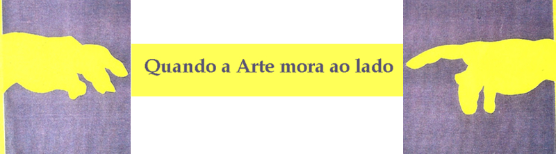
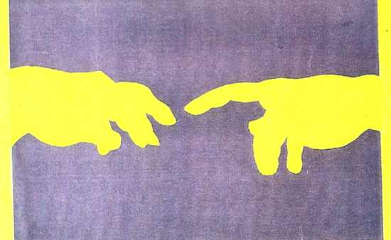
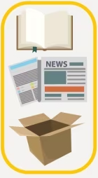
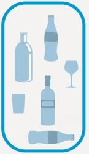
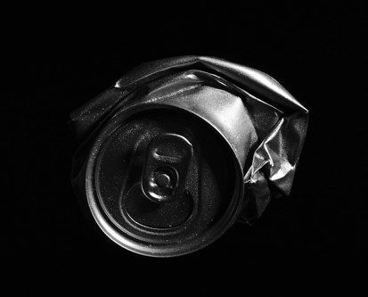
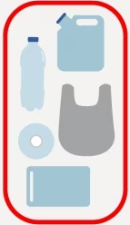
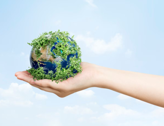

Somando esforços por um mundo melhor
Objetivo de Desenvolvimento Sustentável (ODS)
|  |
O projeto "Quando a Arte mora ao lado" busca conectar artistas visuais e profissionais da indústria criativa,
que pertençam a cidades adjacentes, para divulgar seus trabalhos e transformar materiais que podem ser
reciclados em Arte. Os produtos culturais resultantes desse processo criativo podem ser vendidos por meio de
um site a ser produzido em parceria com a iniciativa privada.
"Quando a Arte mora ao lado" é inspirado nos Objetivos de Desenvolvimento Sustentável (ODS), e particularmente,
em "Parcerias e Meios de Implementação". A missão do projeto é estimular a cooperação entre as pessoas e contribuir para que materiais sejam reciclados a fim de conservar o planeta.
"Quando a arte mora ao lado" valoriza a diversidade de ideias, a simplicidade, o desenvolvimento de parcerias para transformar em Arte o que seria descartado no meio ambiente, impedindo sua regeneração. Com divulgação e distribuição dos produtos por meio do site. Tudo feito com profissionalismo, alegria e responsabilidade.
|
Contato para mais informações:
Fone: (21) 9999-9999
Webdesigner@pronatureza.com.br
|
 |
Projeto
O projeto "Quando a Arte mora ao lado" busca conectar artistas visuais e profissionais da indústria criativa,
que pertençam a cidades adjacentes, para divulgar seus trabalhos e transformar materiais que podem ser
reciclados em Arte. Os produtos culturais resultantes desse processo criativo podem ser vendidos por meio de
um site a ser produzido em parceria com a iniciativa privada.
"Quando a Arte mora ao lado" é inspirado nos Objetivos de Desenvolvimento Sustentável (ODS), e particularmente,
em "Parcerias e Meios de Implementação". A missão do projeto é estimular a cooperação entre as pessoas e contribuir para que materiais sejam reciclados a fim de conservar o planeta.
"Quando a arte mora ao lado" valoriza a diversidade de ideias, a simplicidade, o desenvolvimento de parcerias para transformar em Arte o que seria descartado no meio ambiente, impedindo sua regeneração. Com divulgação e distribuição dos produtos por meio do site. Tudo feito com profissionalismo, alegria e responsabilidade.
Seleção

Papéis
Praticamente todos os tipos são recicláveis, inclusive caixas do tipo longa-vida e de papelão, papel laminado, nota fiscal, envelope, jornais e revistas. Porém, precisam estar limpos e secos. Podem ser dobrados ou picados, mas não amassados.

Vidros
O vidro pode ser infinitamente reciclado e praticamente todos os tipos são recicláveis, exceto lâmpadas, cristais, espelhos, vidros temperados, louça, cerâmica, porcelana, óculos, pirex e vidros especiais, como tampo de forno e micro-ondas.

Metais
São recicláveis: enlatados, ferragens, arames, chapas, canos, pregos, parafusos, cobre alumínio. Curiosamente, uma única lata de alumínio economiza energia suficiente para manter uma TV ligada durante três horas.

Plásticos
Praticamente todo tipo de plástico é reciclável. Não se recicla adesivos e acrílico. Saiba que cada 100 toneladas de plástico reciclado, economiza-se 1 tonelada de petróleo.
Ecopontos
Veja onde você pode levar seus resíduos recicláveis:

Campo de Santana, Centro - RJ
Passeio Público do Rio de Janeiro, Centro -RJ
{kind=link}